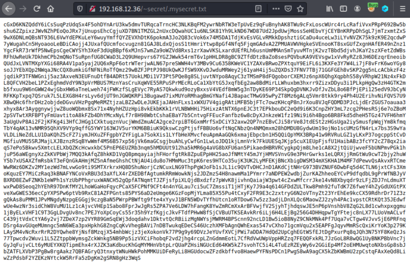
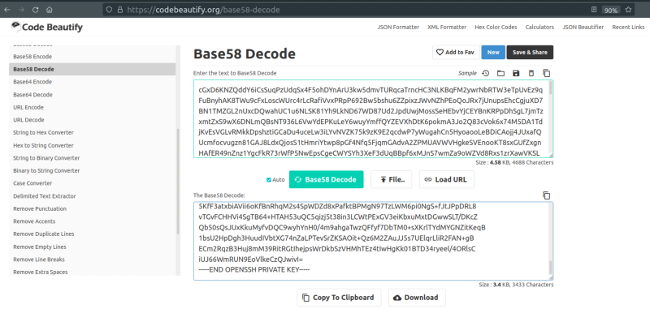

3.2 Get private SSH key
1. Navigate to http://192.168.12.36./~secret/.mysecret.txt.

It's a “Base58” encoded text. You can see there's any zero (0) in the text.
Base58 alphabet:
123456789ABCDEFGHJKLMNPQRSTUVWXYZabcdefghijkmnopqrstuvwxyz
2. Go to this link to decode the text.

3. Copy the decode text and create a file called “sshkey” with the text.
4. Change the “sshkey” file's permissions.
$chmod 600 sshkey